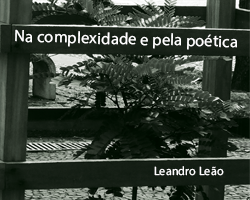

Textos
Textos do projeto
ver-a-cidade
pertencer à cidade: antes de tudo ser.
virar prédio, rua, avenida, cruzamento, vila, feira, rio canalizado.
toda pessoa é uma cidade inteira.
pertencer ao lugar onde se vive, fazer morada dentro de si.

Na complexidade e pela poética
"Também são o espaço urbano os ambientes das casas particulares; e o retábulo sobre o altar da igreja, a decoração do quarto de dormir ou da sala de jantar, até o tipo de roupa e de adornos com que as pessoas andam, representam seu papel na dimensão cênica da cidade...
Catálogo digital